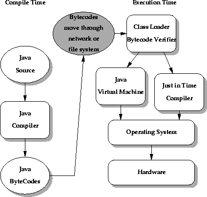

| CONTENTS | PREV | NEXT | The Java Language Environment |
What about the concept of a "hostile compiler"? Although the Java compiler ensures that Java source code doesn't violate the safety rules, when an application such as the HotJava Browser imports a code fragment from anywhere, it doesn't actually know if code fragments follow Java language rules for safety: the code may not have been produced by a known-to-be trustworthy Java compiler. In such a case, how is the Java run-time system on your machine to trust the incoming bytecode stream? The answer is simple: the Java run-time system doesn't trust the incoming code, but subjects it to bytecode verification.The tests range from simple verification that the format of a code fragment is correct, to passing each code fragment through a simple theorem prover to establish that it plays by the rules:
A language that is safe, plus run-time verification of generated code, establishes a base set of guarantees that interfaces cannot be violated.
The bytecode verifier traverses the bytecodes, constructs the type state information, and verifies the types of the parameters to all the bytecode instructions.
The illustration shows the flow of data and control from Java language source code through the Java compiler, to the class loader and bytecode verifier and hence on to the Java virtual machine, which contains the interpreter and runtime system. The important issue is that the Java class loader and the bytecode verifier make no assumptions about the primary source of the bytecode stream--the code may have come from the local system, or it may have travelled halfway around the planet. The bytecode verifier acts as a sort of gatekeeper: it ensures that code passed to the Java interpreter is in a fit state to be executed and can run without fear of breaking the Java interpreter. Imported code is not allowed to execute by any means until after it has passed the verifier's tests. Once the verifier is done, a number of important properties are known:
While all this checking appears excruciatingly detailed, by the time the bytecode verifier has done its work, the Java interpreter can proceed, knowing that the code will run securely. Knowing these properties makes the Java interpreter much faster, because it doesn't have to check anything. There are no operand type checks and no stack overflow checks. The interpreter can thus function at full speed without compromising reliability.